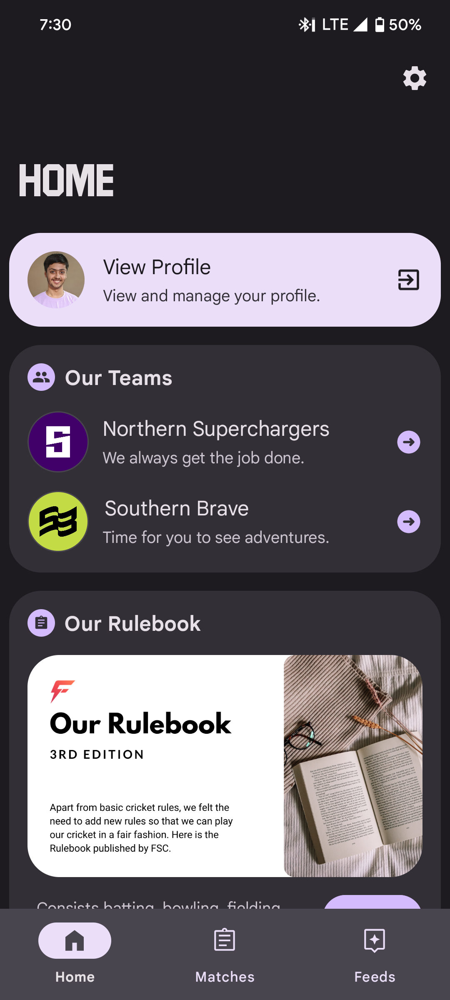
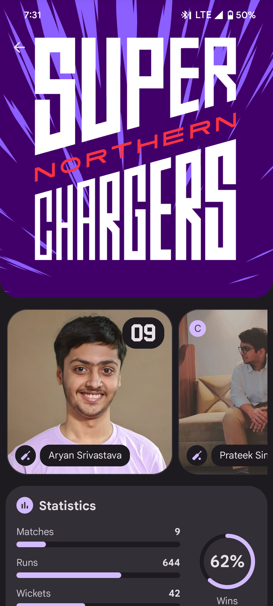
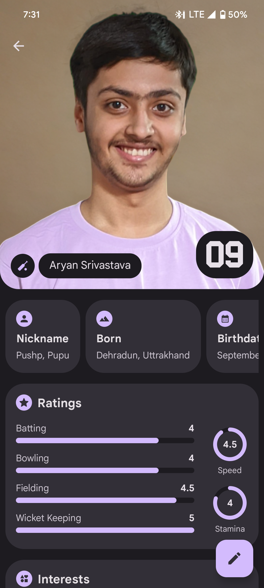

The FSC App



The FSC App is the ultimate solution for managing and accessing all cricket-related information at the Fizanyatik Sports Club. Whether you're a player, a club member, or a passionate follower, this app keeps you connected with every aspect of the club. Track player statistics, rankings, and match details in one convenient place. Stay updated with schedules, team news, and other essential updates. Designed to be user-friendly and feature-packed, the FSC App serves as a one-stop platform for managing and celebrating the game at Fizanyatik Sports Club!